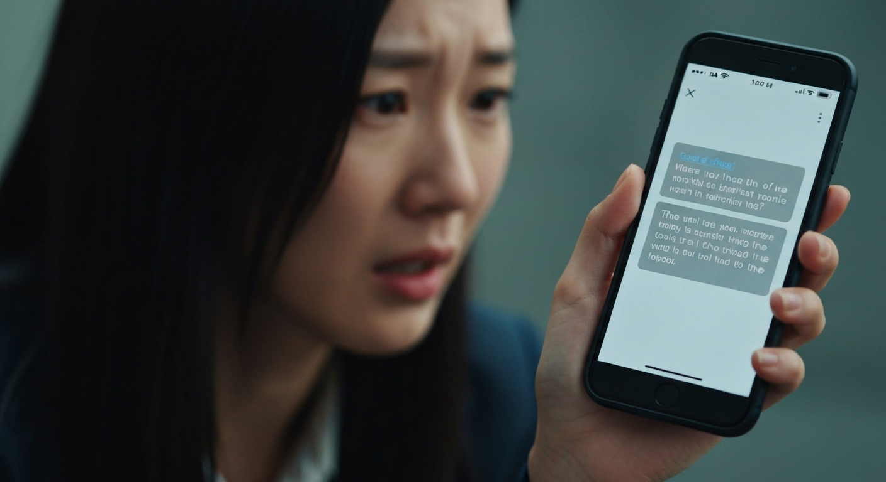
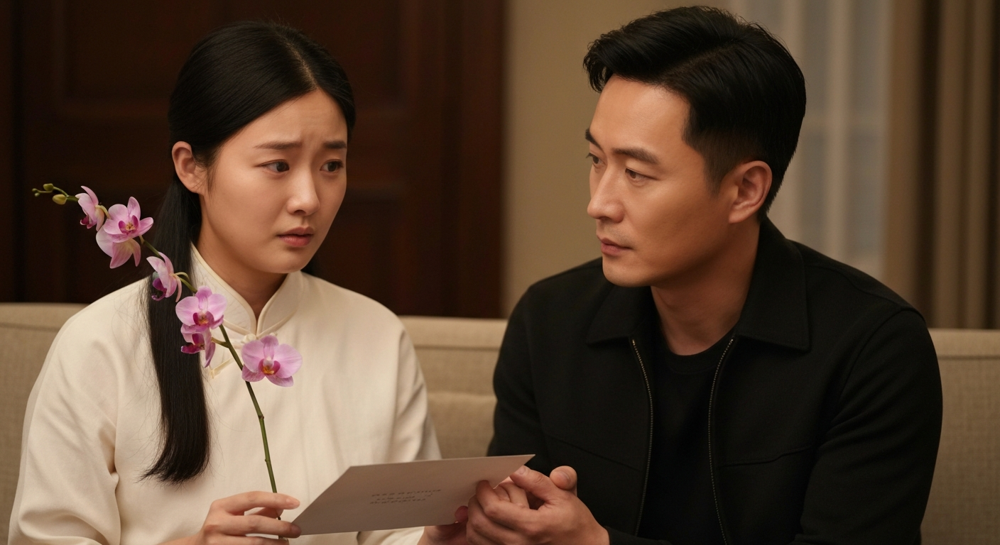

失憶後我愛上了死對頭，醒來後他卻是我老公
第 1 篇
醒來後，我的世界崩塌了
「妳…妳怎麼可能懷孕了？」醫生把超音波照片遞給我時，我的腦袋嗡地一聲，一片空白。車禍醒來後，我失去了所有的記憶，連自己是誰都不知道，現在卻被告知懷了陌生人的孩子？更離譜的是，病床邊那個一臉冰霜，帥到讓人心跳漏拍的男人，竟然就是孩子的爸？他叫李威，一個我完全沒印象的人。他看我的眼神，複雜得像一團解不開的線，有隱忍，有疲憊，還有那麼一絲，我說不出來的，像是不甘心？我努力想從他的臉上找出一點熟悉感，卻徒勞無功。我的世界，就這樣毫無預警地，連根拔起了。
💬 記憶清零，卻多了一個陌生又帥氣的「孩子他爸」？這是什麼狗血人生啊！
第 2 篇
他對我的「溫柔」，藏著什麼秘密？
李威把我接回一棟豪華公寓。他為我準備的晚餐是義大利麵，清淡卻細心。他小心翼翼地幫我把麵捲好，遞到我面前，動作自然得像是已經做了千百遍。這種溫柔，讓我的心頭暖暖的，卻也感到一絲不安。一個如此細膩的男人，怎麼可能我一點印象都沒有？他總是會在我不經意的時候，用那雙深邃的眼睛凝視我，欲言又止。我嘗試問他，我們之前是怎麼認識的？交往多久？他卻只是輕描淡寫地說：「我們…很相愛。」每次提到過去，他就會避開我的眼神。這種模糊不清的態度，像一根刺，扎在我心裡。我開始懷疑，他口中的「很相愛」，究竟是真的，還是只是為了這個孩子，演給我看的戲？
💬 他的溫柔像糖，卻甜得讓人發慌，因為我總覺得，這份溫柔背後，藏著一個巨大的秘密。

第 3 篇
「妳以前最討厭我了」——陌生訊息的衝擊
洗澡時，我發現李威手機放在床頭。鬼使神差地，我點開了他的Line。訊息不多，但有一條來自一個叫「阿哲」的聯絡人，內容讓我瞬間僵住：「李威，小恩以前最討厭你了，你確定她失憶後會愛上你？別再自欺欺人了。」我的心像被重重敲了一下。討厭他？這怎麼可能？他對我那麼好。我握著手機的手微微顫抖，耳邊嗡嗡作響。我本能地想去質問李威，但又怕破壞這脆弱的現狀。我把手機放回原位，假裝什麼都沒發生。但那句話像魔咒般迴盪在我腦海裡：『小恩以前最討厭你了』。這才是我們關係的真相嗎？我的頭開始隱隱作痛，一些破碎的畫面似乎想衝破腦海的禁錮，卻又模糊不清。
💬 一條陌生訊息，揭開過去的冰山一角，原來我們的關係，和我想像的完全不一樣。
第 4 篇
他不是我老公，他是我死對頭！
我決定找機會驗證那條訊息。趁李威出門開會，我翻找著公寓。在書房一個上鎖的抽屜裡，我找到一個舊盒子，裡面放著幾張照片和一本泛黃的日記。照片裡，我和李威站在一群人中間，我皺著眉頭，他則是一臉不屑。這哪裡像『很相愛』的樣子？更可怕的是，日記的扉頁上寫著我的名字，以及一句刺眼的標題：「死對頭李威的百種討厭行為」。我的心臟像被冰水澆透，那些零碎的記憶碎片此刻像電流般衝擊著我，我頭痛欲裂，卻也清晰地意識到：我懷的不是老公的孩子，而是死對頭的！我愛上的這個男人，竟然是我失憶前最討厭的人！
💬 不是冤家不聚頭，是失憶後我愛上了我的死對頭！這劇情，連八點檔都不敢這麼寫吧？
第 5 篇
假裝失憶的我，愛上了他？
原來，李威和我是競爭對手公司的繼承人，兩家從祖輩就是死對頭，我們從小到大摩擦不斷，水火不容。日記裡寫滿了我對他的吐槽：他如何自大、如何毒舌、如何搶走我的第一個客戶。然而，在日記的最後幾頁，畫風卻漸漸變了。有一次他幫我解圍，有一次他熬夜為我送資料，甚至還有幾次，我描述他看我的眼神『不那麼討厭』了。我看到最後一頁，一句未完成的話：「或許，他其實…」我的心亂成一團。所以，我們之間並不是簡單的死對頭關係？在我失憶之前，我們的感情就已經悄悄發生變化了嗎？難道，我是在假裝失憶的同時，愛上了這個曾經被我寫滿厭惡的男人？
💬 我以為我討厭他，但日記裡的字句卻透露著，在他不經意的溫柔裡，我的心早已叛變。
第 6 篇
面對他，我該如何選擇？
我重新審視李威。他依然溫柔地照顧我，為我準備營養餐，陪我散步，甚至徹夜未眠，只為我半夜想吃的一口滷肉飯。他看我的眼神，從之前的隱忍，如今更多了一種小心翼翼的期盼。他小心翼翼地維護著這個『我們很相愛』的假象，試圖讓我愛上他。我知道他愛我，至少現在的『我』，他愛得深沉。可是，我該怎麼辦？是戳破這個謊言，讓他面對一個依然討厭他的『我』，還是繼續沉浸在這份虛假的溫柔裡，假裝什麼都不知道？肚子裡的寶寶提醒著我，這個選擇不再只關乎我一個人。我的抉擇，將會影響我們三個人的未來。
💬 假裝不知情，還是戳破謊言？愛上死對頭的代價，由我一人承擔，還有肚子裡無辜的小生命。

第 7 篇
「醒來後，他卻是我老公」——結局揭曉
我決定面對李威。他聽完我的質問後，沒有否認，只是沉默地遞給我一個小盒子。裡面是一枚戒指，還有他寫的一封信。信中說，車禍前一晚，他鼓起勇氣向我求婚，而我，也答應了。原來，在我們爭吵不休的表面下，愛情的種子早已悄悄萌芽。我對他的厭惡，早就轉化為一種只有我倆才懂的打情罵俏。而我日記裡的未竟之語「或許，他其實…」後面原本要寫的是「…他其實是個值得愛的人」。他為了不讓我承受失憶的痛苦，才選擇隱瞞我們的過去，想讓我重新愛上他一次。我的眼淚不自覺地流了下來。這不是狗血的愛情劇，而是我們獨有的愛情故事。我抬頭看著他，他的眼中是滿滿的愛意和歉意。我伸出手，輕輕撫摸著他的臉，他緊緊握住我的手。我的記憶或許還沒完全回來，但我知道，我的心已經替我做出了選擇。現在，他不是我的死對頭，他是我失而復得的，未來的老公。
💬 失憶讓我重新認識你，也重新愛上你。原來，你一直都是，我生命中最特別的那個他。